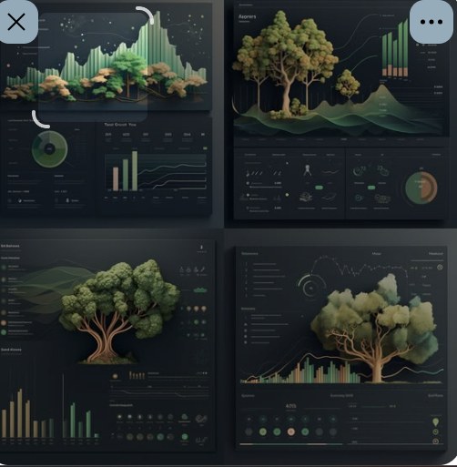

Los colores y el paisaje de tu nueva imagen (verdes de musgo, tonos arena y cobre sobre fondo oscuro) aplicados a la combinación anterior: letra con serifa de A, tarjetas redondeadas de C y la rueda de madurez. Los datos son de una empresa de ejemplo.
Tu imagen

Resultados · móvil (oscuro)
Empresa de ejemplo · 21 oct 2026
Puntaje general
57.2 / 100
En desarrollo · 37 de 40 respuestasAmbiental
9 de 10 preguntas
Social
10 de 10 preguntas
Gobernanza
8 de 10 preguntas
Económica
6 de 6 preguntas
3 preguntas sin información. Complétalas para afinar tu resultado.
Página de ventas · móvil
Ambiental
Económica
Social
Gobernanza
Cadena de valor (en la base)
Un diagnóstico, un plan y tu historial. Todo ordenado por empresa, sin empezar desde cero cada vez.
7 días de prueba · sin tarjeta
Página de ventas · escritorio (oscuro)
Un diagnóstico, un plan y tu historial. Responde las cuatro dimensiones, mira tus brechas y sigue tu avance sin empezar de cero cada vez.
Descubre cómo gestionas energía, agua, residuos y tu impacto en el entorno.
Revisa el bienestar de tu equipo, la seguridad y la relación con tu comunidad.
Mira tus políticas, tu ética, tus riesgos y cómo tomas decisiones.
Encuentra dónde reducir desperdicios y usar mejor tus recursos.
Proveedores, clientes y operación atraviesan las cuatro dimensiones. No entra en el puntaje general.
7 días de prueba · sin tarjeta
Misma paleta en modo claro
Resultados · móvil (claro)